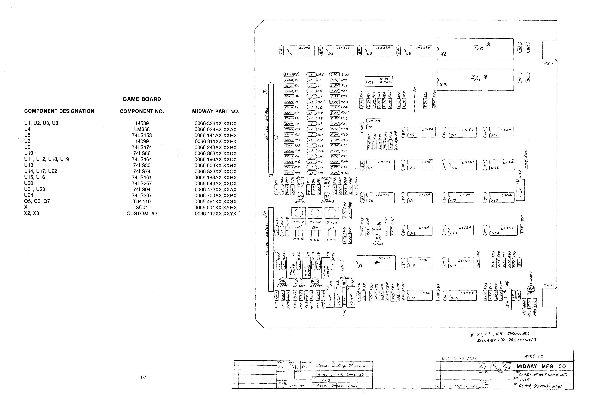
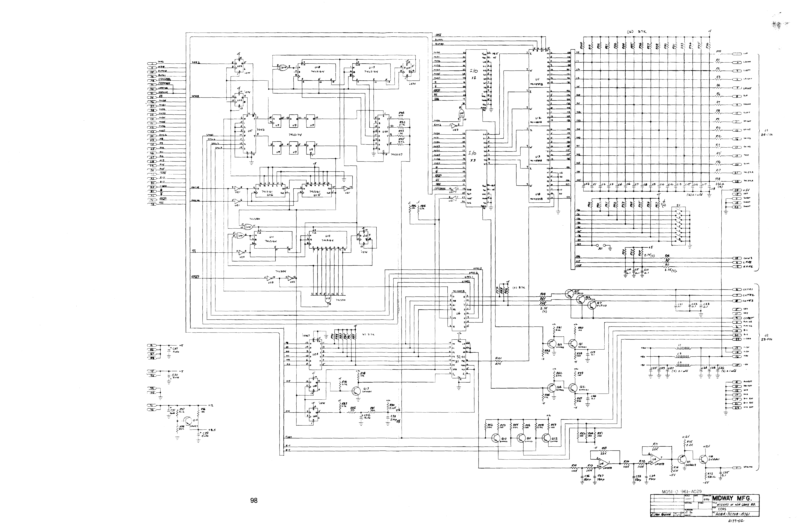

90708 at a glance
The 90708 Game Board is the cabinet-facing game logic board used in the Bally/Midway Astrocade card-rack family. In a Wizard of Wor set it is the board that carries the option switches, custom I/O logic, speech/audio-related interface pieces, and the wiring traversal between the internal card rack and the external cabinet harness.
Use the board number carefully. The card-rack family includes Space Zap, Wizard of Wor, Gorf, and Robby Roto, but Space Zap uses 90706 as its game board. Wizard of Wor, Gorf, and Robby Roto share the 90708 board number at the family level, while the actual assemblies and pinout behavior vary by game and revision.
A084-90708-A96190708 board is where that core becomes a specific game cabinet: coin doors, controls, DIP options, speech/audio routing, video/interface signals, and revision-specific harness logic.
Where 90708 sits in the card rack
Bally/Midway used a modular card cage instead of one large monolithic game PCB. The game-specific boards plug into an edge-connector backplane. The 90708 is the final game logic/interface card in that stack for Wizard of Wor-style systems.
| Board | Working role | Notes |
|---|---|---|
| 91354 | Central Processing Unit board | Z80 CPU, address custom chip, data custom chip, and system crystal on Wizard of Wor six-card systems. |
| 91355 / 91348 | Pattern Transfer / graphics board | Moves pattern/graphics information at the faster board-level rate used by the card-rack video system. |
| 91356 | RAM card | Wizard of Wor documentation calls out two RAM cards, each with sixteen M4027 RAMs. |
| 91397 / 91398 | ROM/RAM memory board family | Game code/data storage varies by title and revision. |
| 90708 | Main game logic / I/O board | Game-specific cabinet bridge. Carries custom I/O chips, option switches, speech/audio interface pieces, input traversal, and harness-facing logic. |
90708 as a board family number, not a universal interchangeable cabinet adapter. Wizard of Wor documentation identifies A084-90708-A961; Gorf revisions are different. Verify assembly suffix, connector pinout, power rails, and cabinet harness before swapping boards.
Board architecture and signal jobs
The 90708 board is best understood as the system's cabinet-facing translator. It does not replace the CPU board or RAM board; it makes the shared card-rack electronics behave like a specific arcade machine.
Cabinet I/O bridge
Routes coin door triggers, start buttons, player controls, test/service lines, cabinet wiring, and board-level status signals between the external harness and the internal card rack.
Option switch host
The Wizard of Wor option switch bank is physically located on the game P.C.B. in the commercial card rack, so rule settings and coin pricing terminate at this board.
Custom I/O support
The board includes custom I/O sockets and glue logic for scanned switch matrices, potentiometer input handling, audio data loading, and game-specific interface behavior.
Audio and speech routing
Wizard of Wor's speech and player-sound routing differs from simpler card-rack titles. The game board participates in the signal path before audio reaches the remote volume controls and amplifier/speaker wiring.
Primary components called out on the Wizard of Wor 90708 layout
| Designator | Component | Practical reading |
|---|---|---|
| U1, U2, U3, U8 | 14539 | Custom/interface support logic listed on the component layout. |
| U4 | LM358 | Dual op-amp used in analog conditioning paths. |
| U5 | 74LS153 | Dual 4-input multiplexer. |
| U6 | 14099 | Addressable latch. |
| U9 | 74LS174 | Hex D flip-flop. |
| U10 | 74LS86 | Quad XOR gate. |
| U11, U12, U18, U19 | 74LS164 | Serial-in / parallel-out shift registers. |
| U13 | 74LS30 | 8-input NAND gate. |
| U14, U17, U22 | 74LS74 | Dual D flip-flops. |
| U15, U16 | 74LS161 | 4-bit binary counters. |
| U20 | 74LS257 | Quad 2-line selector/multiplexer. |
| U21, U23 | 74LS04 | Hex inverters. |
| U24 | 74LS367 | Tri-state buffer. |
| Q5, Q6, Q7 | TIP110 | Power transistor drivers. |
| X1 | SC-01 | Speech synthesizer position for Wizard of Wor voice output. |
| X2, X3 | Custom I/O | Socketed custom I/O positions on the game board. |
Board schematics and manual plates
The two most important 90708 pages are the component layout and the full hardware schematic. Both are shown below using the same click-to-open full-size pan view used elsewhere in the Field Guide.



Supporting manual pages
These supporting pages document the option switch bank, back-panel pin names, custom chip pinouts, custom chip functional descriptions, and the Wizard of Wor six-card Z80 service-bulletin summary.


Custom chips and data flow
The 90708 board works with the same Astrocade custom-chip ecosystem described in the machine-model chapter, but its cabinet-facing custom I/O role is especially important for troubleshooting.
I/O custom chip
The Z80 communicates with the I/O chip through input and output instructions. Switches are read as an 8×8 matrix: one of the SO0-SO7 scan lines is activated, and the switch matrix returns eight data bits through SI0-SI7, then back to the Z80 through MUXD0-MUXD7.
Pot and music paths
The Z80 can read four potentiometer positions through the A-D converter. It also loads data into the music processor through output instructions; that data determines the generated audio characteristics.
Address custom chip
The Microcycle Decoder generates twelve bits of Z80 address from the 8-bit Microcycle Data Bus. Scan-address logic arbitrates RAM access with the Z80 and can force the Z80 to wait for no more than one cycle.
Data custom chip
The TV sync generator, shift register, microcycle generator, and Magic Function Generator all meet here. During memory write cycles, Magic can modify data before it is placed on the memory data bus.
Option switch configuration
The Wizard of Wor 8-position DIP switch bank is located on the game P.C.B. in the commercial card rack. Changing selection switches during diagnostics produces a continuous test tone through the speaker system, which is useful when confirming that the board sees a switch transition.
| Switch | Function | OFF | ON |
|---|---|---|---|
| SW #1 | Left coin slot | 1 coin / 1 credit | 2 coins / 1 credit |
| SW #2 + SW #3 | Right coin slot matrix | OFF/OFF: 1 coin / 1 credit · ON/OFF: 2 coins / 1 credit · OFF/ON: 1 coin / 3 credits · ON/ON: 1 coin / 5 credits | |
| SW #4 | Language | English | Foreign language; requires A082-91374-A000 |
| SW #5 | Worriors per credit | 1 credit = 2 Worriors / 2 credits = 5 Worriors | 1 credit = 3 Worriors / 2 credits = 7 Worriors |
| SW #6 | Bonus player awarded | Bonus Worrior after third dungeon | Bonus Worrior after fourth dungeon |
| SW #7 | Play mode | Coin play | Free play |
| SW #8 | Game attraction sounds | Continuous sound during attract mode | Attract sound only when a game control is touched; then quiet until touched again |
Diagnostic and maintenance notes
For bench work, the 90708 should be treated as both a logic board and a cabinet-interface board. A black screen may be a failed memory-board/ROM/RAM check, but bad inputs, stuck switch-matrix lines, or harness shorts can also put the board into diagnostic behavior.
- Watchdog loop / black screen: The platform performs RAM/ROM validation on boot. If RAM on a 91356 card or ROM on the memory board fails, the program can halt almost immediately.
- 16-second flash: On a healthy test-bench loop, the screen can flash roughly every 16 seconds while cycling through continuous validation code.
- Switch-change tone: Moving option switches during diagnostics should trigger a continuous tone. If the tone is present without input, look for a stuck switch, shorted input line, or grounded contact path.
Joystick MOVE/DIR traversal
Wizard of Wor's player controls use a two-stage blade setup so the player can aim without moving. For input diagnosis, keep the distinction between direction and movement clear.
| State | Contact behavior | Expected meaning |
|---|---|---|
| DIR | Switch blades 3 and 1 make contact | Pure aim direction: left, right, up, or down. |
| MOVE | Switch blades 3, 1, and 2 make contact | Movement permission: YES or NO. |
| Neutral | No joystick movement or aim pressure | Both matrices should settle into a NO / NO loop. |
Crosshatch monitor calibration
To reach the crosshatch path through the 90708 logic, switch the master diagnostic switch under the counter assembly inside the coin door to ON, then press 1 Player Start and 2 Player Start together. The board should replace the normal alphanumeric system check with a crosshatch grid for monitor alignment.
Volume controls
The game board participates in the audio/speech path, but the physical Wizard of Wor volume adjustments are not on the card cage. The remote three-pot board is mounted behind the coin box: left pot for the Wizard voice, center pot for left-player sounds, and right pot for right-player sounds.
MAME driver context
MAME groups Wizard of Wor, Gorf, Space Zap, Robby Roto, and related Astrocade arcade hardware under the astrocde.cpp driver family. That driver is useful because it encodes the shared memory/I/O model while still preserving game-specific behavior.
Shared architecture
The common driver model reflects the shared low-ROM/Magic-write window, video RAM conventions, custom port behavior, and card-rack family resemblance.
Game-board differences
Do not flatten the family into one board. Wizard of Wor has unique speech and multi-speaker behavior; Space Zap is simpler and uses 90706; Gorf uses its own game-specific board assembly behavior.
Source notes
A084-90708-A961. The layout marks X1, X2, and X3 as socketed positions.
astrocde.cpp
Useful executable reference for comparing board-family memory maps, custom I/O behavior, and game-specific hardware paths against the physical schematics.